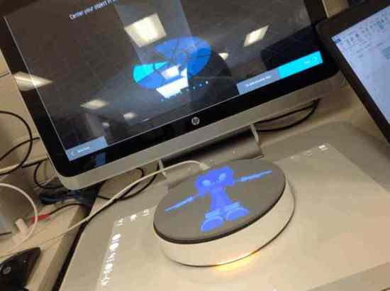
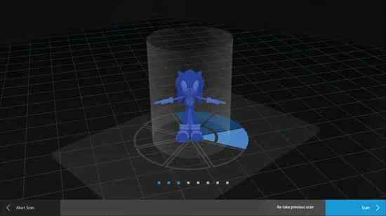

Screen above displays the live camera feed and instructions. Touch mat below is the active workspace. The overhead unit projects guidance onto the mat and captures the object simultaneously.


HP Sprout was a radical reimagining of the personal computer — an all-in-one with a projector-camera mounted overhead, a large touch-sensitive mat below, and an Intel RealSense depth camera embedded in the unit. 3D Capture was its most ambitious feature: scan real-world objects in 360°, producing detailed textured meshes ready for editing, 3D printing, or sharing to platforms like SketchFab — all without any prior 3D expertise.
The complete workflow — place object on the blue mat circle, run up to 8 scan cycles, merge captures, fill gaps, export to OBJ or 3MF — had to feel as simple as taking a photograph. There was no roadmap. No existing UX conventions for consumer 3D scanning. We were inventing the interaction model while the hardware was being built around us.
We were designing in between worlds: powerful enough for professional output, approachable enough for a first-time user in under 60 seconds. Every UX decision directly constrained — and was constrained by — hardware that was still being built.
The core UX challenge was teaching users the dual-surface interaction model — instructions on the vertical screen above, active workspace on the touch mat below. The overhead projector-camera simultaneously watches the mat and projects guidance onto it, creating a feedback loop entirely new to computing.
Screen above displays the live camera feed and instructions. Touch mat below is the active workspace. The overhead unit projects guidance onto the mat and captures the object simultaneously.
My approach began with the physical interaction model first — how does a user understand what to do with an object on a rotating stage? Before any screen design, I mapped the full physical-digital loop: place object → scan cycle → reposition → scan again → view result.

On the mat: the scan cycle diagram is projected physically onto the stage — a pie chart telling users which of 8 positions to rotate to next. On the screen: a live camera feed shows how the computer is seeing the object in real time, confirming angle and centering before each scan. Neither channel works without the other.
8 scan positions projected directly onto the touch mat — each segment represents one scan angle. The arrows tell the user exactly how to rotate the object between cycles. Full blue circle = capture complete.


Once scanned, the 3D model is projected directly onto the touch mat — the same surface where the physical object sat moments before. Users can rotate, scale, and interact with the digital version using their fingers. The transition from physical to digital happens without ever leaving the workspace.
"The object sitting on the mat is the interface. Everything we designed — the projected blue circle, the orange scan glow, the cycle sounds — was about making the physical object feel like part of the software."HP Sprout 3D Capture — Design Reflection


A live demonstration of the HP Sprout 3D Capture workflow — from placing an object on the stage through the automated scan cycles to the final 3D mesh result.
HP Sprout 3D Capture — the complete scan-to-mesh workflow in a single take.
HP Sprout 3D Capture shipped with the HP Sprout Pro G2 in 2015 — the first consumer computer with integrated 3D scanning. The system supported both automatic stage-based capture and freeform manual scanning, with output in OBJ and 3MF formats — compatible with major 3D printing workflows and platforms like SketchFab.
The 8-cycle scan model, dual-mode entry point, and projected stage guidance became foundational UX patterns for the entire Sprout 3D ecosystem — reused across subsequent Sprout features and referenced in HP's spatial computing design guidelines.
The project also demonstrated that hardware and design could ship simultaneously from a unified team — a model that influenced how HP structured subsequent Sprout development cycles.
I would advocate for earlier longitudinal testing with the physical hardware. Wizard of Oz methods were invaluable early on, but the transition to actual hardware revealed failure modes — especially the projected guide's visibility under ambient light — that we hadn't fully anticipated.
I'd also push harder for a dedicated first-run onboarding experience. The system was genuinely novel and we relied too heavily on in-context guidance. A brief first-time setup flow would have reduced the learning curve without adding friction for returning users.
Looking forward, voice coaching and AI make this process dramatically simpler. Instead of an 8-step manual repositioning cycle, an AI-powered system could analyze the mesh in real time and instruct users — or the stage itself — to only capture the angles that are actually missing.